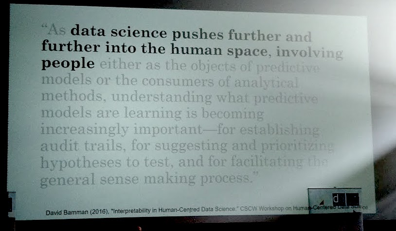
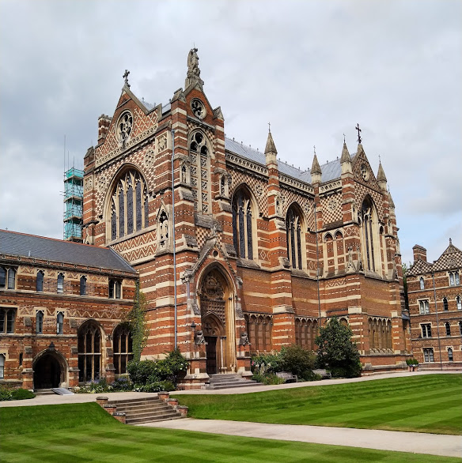

Ever since I started my Master’s studies in Library and Information Science at Uppsala University in the Fall of 2015, digital humanities has interested me as a new, interdisciplinary field of research. Its’ multifaceted character, involving a multitude of humanistic disciplines, provide a frame to contemporary theoretical and methodological problems related to how art and media through various modalities has been, can be and will be analysed with digital methods. As a newly appointed PhD Candidate (April 2019) at the University Borås, it was very helpful to be able to participate in this year’s edition of the course From text to tech during the Digital Humanities at Oxford Summer School at the University of Oxford, 22th - 26th of July, 2019.
In the studies which will come to form my thesis I aim to gather material from analog and digital sources related to citizen science projects (conversations, data management practices, websites, social media networks, API’s) and analyse these quantitatively as well as qualitatively. Foremost, it is the quantitative methods that I have come to investigate further during my participation in From text to tech. Several such methods has been covered, discussed, critiqued and practically examined during this week. Most notably, this has been done through a pedagogic procedure grounded in the use of Python notebooks; digital representations of code accompanied by comments in what can be said to resemble notebook simulacra.

The first day of the course week introduced the Python programming language. Although I consider myself to have a basic understanding of Python, the pedagogic milieu encouraged me to discuss methods and procedures with classmates in a co-operative study climate, engaging lectureres as well as course participants. The first day finished with a lecture on corpus linguistics, followed by additional exercises during the second day of the week. An acquaintance with distant reading through Python programming was made. Some parts (such as data structures and regular expressions) were familiar to me while others (such as forensic stylometry) were all new. My learning so far could therefore be divided into two tracks; methods through practical use of code with associated code libraries and perspectives related to the researcher’s relation to the data intended to be analysed. This seems to be a characterisation of digital humanities and digital methods, which I also regard as usable in the long run; research-wise as well as lecturing-wise.
During the third day of the course week, more practical methods for linguistic and semantic analyses of textual material were introduced. Lingustic automatic annotations through part-of-speech tagging, word-stem analysis and lemmatisation were discussed and used. These procedures were followed by sentiment analyses of affects in texts and a lecture on word embeddings in corpus research. At this time, the course’s moments had taken an even more practical form and the earlier mentioned double tracks were even more prominent. I also participated in an additional course on how the Bodleian libraries works with Wikidata, which was very interesting considering my teaching assignments in Library and Information Scientific courses related to the semantic web.
The fourth course day further contributed to interesting practical related to web scraping and the extraction of semantic information in text. The Python library Gensim was used to gain an understanding of document similarity. I also discussed topic modeling with lecturers, providing an understanding of how and to which extent automatic semantic analysis can be done on collected data. The final day of the course dealt with network visualisation of structured textual data and topic modeling with LDA.
The course week has provided me with an understanding on how natural language processing as digital methods may be used as a mixed method analysis altogether with qualitative methods. I am very pleased and thankful to be able to participate in this year’s edition of the Digital Humanities at Oxford Summer School.